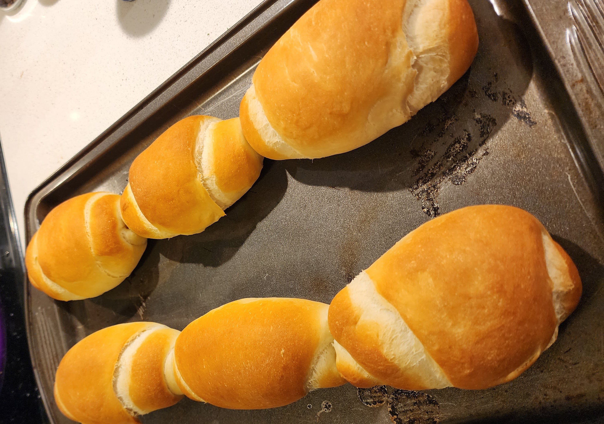

Salt bread/Pão francês
Para a versão em português, clique aqui.

Sponge
The role of a sponge in bread making is not to activate the yeast, but to give it the strength it will need to rise with the next additions of flour and other ingredients, this is why the process of creating the sponge feeds the yeast with water and flour.
Ingredients
- 1/4 cup of flour
- 1 tablespoon of dry yeast
- 3 tablespoons of water
Steps
- Mix the flour and the yeast with a fork, and slowly start adding the water;
- Start mixing to create a homogeneous mixture;
- After mixing it up, leave it to rest for 1/2 hour to 1 hour (the time will depend on the temperature of the room, to allow the sponge to grow effectively);
Dough
Ingredients
- 2 + 3/4 cups of flour
- 1/2 tablespoon of salt
- 1/2 tablespoon of sugar
- 1 + 1/2 tablespoon of butter
- The butter cannot be too cold, neither too hot, but it needs to be warm enough to be incorporated to the dough
- 1 cup of water
Steps
- Start mixing up the solid ingredients (flour, salt and sugar), add the sponge and the butter to the mixture;
- Slowly start adding water to control the dough humidity, the dough should not be to moist, neither too dry;
- The amount of water that will be added to the mixture will vary depending on the water absorption of the flour
- Knead the dough for a time between 10 to 15 minutes, this time might vary, specially if you are doing it by hand, but it is important that the dough reaches a point when it can be stretched without tearing apart;
- Leave the dough to rest for 20~30 minutes covered with a wet towel;
Shape the bread
Most of the dough growing will take place after the bread is cast into shape, this is why the first fermenting step is quick. If the dough doesn’t grow as expected in this first 20 to 30 minutes, there is no worry, since the bread will grow more after casting.
First Cast
- Split the dough into 6 even parts, each of the parts will be shaped as a stretched diamond, thinner in the edges and thicker in the middle;
- Take one edge of the bread, and start rolling it into the dough, casting it into a cylindrical format, with 6 or 7 rolls;
- Do it for the 6 parts, and let them rest for another 20 to 30 minutes;
Second Cast
- Take each cylinder, and stretch it back again to the stretched diamond format;
- From the edge of the bread, start rolling it into the dough as in the previous step, however, rolling it tighter, to create tension in the outer layer of the bread, casting it into a cylindrical format again, with 9 to 10 rolls;
- Do it for the 6 breads, and leave it to grow for 1 hour.
Baking
To bake this bread, the oven will need to have high humidity levels, to allow the bread to create a thick crust. One way that can be used to create humidity inside the oven is to place a tray with boiling water and a towel inside, allowing the water to evaporate inside the oven.
- Set the oven to 220ºC (430º F) and add the tray with boiling water;
- Insert the dough rolls in the oven;
- When it hits the 15 minute mark, remove the tray with boiling water;
- Leave the bread for another 10 to 15 minutes, which should be enough time to harden the bread crust and leave it with a golden color;
Happy baking!